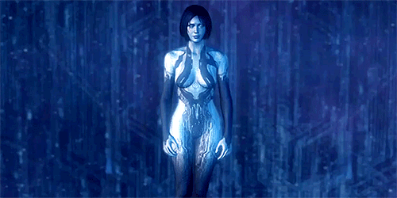

<!DOCTYPE html> 
<html>
	<head>
		<meta charset="utf-8"->
<link rel="Stylesheet" href="style.css">
<link rel="Stylesheet" href="Style.css">
		<title> pagina web de IA</title>
		<body>
		<h1>Inteligencia Artificial </h1>
		<h2> Busqueda entre adversarios, percepcion</h2>
		 

	<br/>
      <div class="row">
        <div class="col-md-12">
          <div>
            <div>
              <h1 id="o">BUSQUEDA ENTRE ADVERSARIOS</h1>
            </div>
            <div class="divcuadro">
              <p style="color:#ECF0F1">Decisiones en tiempo real imperfectas
El algoritmo minimax genera el espacio de búsqueda entero, mientras que el algoritmo
alfa-beta permite que podemos partes grandes de él. Sin embargo, alfa-beta todavía
tiene que buscar en todos los caminos, hasta los estados terminales, para una parte del espacio de búsqueda. Esta profundidad no es, por lo general, práctica porque los movimientos
deben hacerse en una cantidad razonable de tiempo (típicamente, unos minutos como máximo). El trabajo de Shannon en 1950, Programming a computer for playing chess, propuso un cambio: que los programas deberían cortar la búsqueda antes y entonces aplicar
una función de evaluación heurística a los estados, convirtiendo, efectivamente, los nodos no terminales en hojas terminales. En otras palabras, la sugerencia deberá alterar minimax o alfa-beta de dos formas: se sustituye la función de utilidad por una función de
evaluación heurística EVAL, que da una estimación de la utilidad de la posición, y se sustituye el test-terminal por un test-límite que decide cuándo aplicar EVAL.</p>
<p1 style="color:#ECF0F1">Funciones de evaluación
Una función de evaluación devuelve una estimación de la utilidad esperada de una posición dada, tal como hacen las funciones heurísticas del Capítulo 4 que devuelven una
estimación de la distancia al objetivo. La idea de una estimación no era nueva cuando
Shannon la propuso. Durante siglos, los jugadores de ajedrez (y aficionados de otros juegos) han desarrollado modos de juzgar el valor de una posición, debido a que la gente
es aún más limitada, en cantidad de la búsqueda, que los programas de computador.
Debería estar claro que el funcionamiento de un programa de juegos es dependiente de
la calidad de su función de evaluación. Una función de evaluación inexacta dirigirá a un
agente hacia posiciones que resultan estar perdidas. ¿Cómo diseñamos funciones de evaluación buenas?
Primero, la función de evaluación debería ordenar los estados terminales del mismo
modo que la función de utilidad verdadera; por otra parte, un agente que la use podría
seleccionar movimientos subóptimos aunque pueda ver delante el final del juego. Segundo, ¡el cálculo no debe utilizar demasiado tiempo! (La función de evaluación podría
llamar a la DECISIÓN-MINIMAX como una subrutina y calcular el valor exacto de la posición, pero esto frustraría nuestro propósito: ahorrar tiempo.) Tercero, para estados no
terminales, la función de evaluación debería estar fuertemente correlacionada con las posibilidades actuales de ganar.</p1>
              
              <p2 style="color:#ECF0F1">Uno podría preguntarse sobre la frase «las posibilidades de ganar». Después de
todo, el ajedrez no es un juego de azar: sabemos el estado actual con certeza. Pero si la
búsqueda debe cortarse en estados no terminales, entonces necesariamente el algoritmo
será incierto sobre los resultados finales de esos estados. Este tipo de incertidumbre está
inducida por limitaciones computacionales, más que de información. Si consideramos
la cantidad limitada de cálculo que se permiten a la función de evaluación cuando se aplica a un estado, lo mejor que se podría hacer es una conjetura sobre el resultado final.
Hagamos esta idea más concreta. La mayoría de las funciones de evaluación
trabajan calculando varias características del estado (por ejemplo, en el juego de ajedrez, el número de peones capturados por cada lado). Las características, juntas, definen varias categorías o clases de equivalencia de estados: los estados en cada categoría
tienen los mismos valores para todas las características. Cualquier categoría dada, por
lo general, tendrá algunos estados que conducen a triunfos, algunos que conducen a empates, y algunos que conducen a pérdidas. La función de evaluación no sabe cuál es cada
estado, pero sí puede devolver un valor que refleje la proporción de estados con cada resultado. Por ejemplo, supongamos que nuestra experiencia sugiere que el 72 por ciento
de los estados encontrados en la categoría conduce a un triunfo (utilidad 1)</p2>
            </div>
          </div>
        </div>

        <div class="col-md-4 ">
          <div>
           
          </div>  
          <div>
          <h1 id="o">juegos</h1>
          </div>
          <div class="divcuadro">
            <p style="color:#ECF0F1">Decisiones óptimas en juegos
Consideraremos juegos con dos jugadores, que llamaremos MAX y MIN por motivos que
pronto se harán evidentes. MAX mueve primero, y luego mueven por turno hasta que el
juego se termina. Al final de juego, se conceden puntos al jugador ganador y penalizaciones al perdedor. Un juego puede definirse formalmente como una clase de problemas
de búsqueda con los componentes siguientes:
• El estado inicial, que incluye la posición del tablero e identifica al jugador que
mueve.
• Una función sucesor, que devuelve una lista de pares (movimiento, estado), indicando un movimiento legal y el estado que resulta.
• Un test terminal, que determina cuándo se termina el juego. A los estados donde el juego se ha terminado se les llaman estados terminales.
• Una función utilidad (también llamada función objetivo o función de rentabilidad), que da un valor numérico a los estados terminales. En el ajedrez, el resultado es un triunfo, pérdida, o empate, con valores 1, 1 o 0. Algunos juegos tienen
una variedad más amplia de resultados posibles: las rentabilidades en el backgammon se extienden desde 192 a 192. Este capítulo trata principalmente juegos de suma cero, aunque mencionemos brevemente juegos con «suma no cero».
El estado inicial y los movimientos legales para cada lado definen el árbol de juegos.
La Figura 6.1 muestra la parte del árbol de juegos para el tic-tac-toe (tres en raya). Desde el estado inicial, MAX tiene nueve movimientos posibles. El juego alterna entre la colocación de una X para MAX y la colocación de un O para MIN, hasta que alcancemos
nodos hoja correspondientes a estados terminales, de modo que un jugador tenga tres
en raya o todos los cuadrados estén llenos. El número sobre cada nodo hoja indica el valor de utilidad del estado terminal desde el punto de vista de MAX; se supone que los valores altos son buenos para MAX y malos para MIN (por eso los nombres de los jugadores).
Este trabajo de MAX al usar el árbol de búsqueda (en particular la utilidad de estados terminales) determina el mejor movimiento.</p>
            
            <p1 style="color:#ECF0F1">Decisiones óptimas en juegos multi-jugador
Muchos juegos populares permiten más de dos jugadores. Examinemos cómo obtener una
extensión de la idea minimax a juegos multi-jugador. Esto es sencillo desde el punto de
vista técnico, pero proporciona algunas nuevas cuestiones conceptuales interesantes.
Primero, tenemos que sustituir el valor para cada nodo con un vector de valores. Por
ejemplo, en un juego de tres jugadores con jugadores A, B y C, un vector vA, vB, vC asociado con cada nodo. Para los estados terminales, este vector dará la utilidad del estado
desde el punto de vista de cada jugador. (En dos jugadores, en juegos de suma cero, el
vector de dos elementos puede reducirse a un valor porque los valores son siempre opuestos.) El camino más simple de implementarlo es hacer que la función UTILIDAD devuelva un vector de utilidades.</p1>

            <p2 style="color:#ECF0F1">Poda alfa-beta
El problema de la búsqueda minimax es que el número de estados que tiene que examinar es exponencial en el número de movimientos. Lamentablemente no podemos eliminar el exponente, pero podemos dividirlo, con eficacia, en la mitad. La jugada es que
es posible calcular la decisión minimax correcta sin mirar todos los nodos en el árbol de
juegos</p2>
          </div>
        </div>

        <div class="col-md-12">
          <div>
            
          </div>
          <div>
            <h1 id="o">PERCEPCION</h1>
          </div>
          <li>Formación de la imagen</li>
          <div class="divcuadro">
            <p style="color:#ECF0F1">La visión recoge la luz reflejada por los objetos en la escena y crea una imagen bidimensional sobre un plano de imagen. El plano de imagen está recubierto con material
fotosensible: moléculas de rodopsina en la retina, haluro de plata en una película fotográfica o una matriz CCD (Charge-Coupled Device) en una cámara digital. Cada punto de un CCD integra los electrones liberados por la absorción de fotones durante un período de tiempo establecido. En una cámara digital el plano de imagen se subdivide en una
rejilla rectangular de unos pocos millones de píxeles. El ojo tiene una matriz de píxeles
similar que consiste en unos 100 millones de bastoncillos y cinco millones de conos, dispuestos en una malla hexagonal.
La escena real es muy grande comparada con el pequeño plano de imagen, por lo
que es necesario disponer de alguna forma de enfocar la luz sobre este plano. Esta labor se puede realizar con lentes o sin ellas. En cualquier caso, la clave está en definir la
geometría de manera que podamos decir dónde se encontrará cada punto de la escena
sobre el plano de imagen.</p>
<p1 style="color:#ECF0F1">Extracción de información tridimensional
En esta sección mostramos cómo pasar de una imagen bidimensional a una representación tridimensional de la escena. Es importante el razonamiento sobre la escena, ya que,
después de todo, el agente vive en el mundo real, no en el plano de imagen, y el objetivo de la visión es ser capaz de interactuar con los objetos del mundo. Sin embargo, la
mayoría de los agentes necesita sólo una representación abstracta limitada de ciertos aspectos de la escena, y no de cada detalle. Los algoritmos que hemos visto en el resto del
libro para tratar con el mundo dependen de que tengamos una descripción concisa de
los objetos, no enumeraciones exhaustivas de cada porción de la superficie tridimensional.
En primer lugar trataremos el reconocimiento de objetos, el proceso de convertir
las características de la imagen (tales como las aristas) en modelos de objetos conocidos (tales como grapadoras). El reconocimiento de objetos se compone de tres pasos:
La segmentación de la escena en objetos distintos, la determinación de la posición y la
orientación de cada objeto relativas al observador, y la determinación de la forma de cada
objeto.</p1>
            
             

          </div>
        </div>
      </div>
    </div>


      </div>
        </div>
        <div class="col-md-12">
          <div>
            
          </div>
          <div>
            <h1 id="o">Reconocimiento basado en la intensidad</h1>
          </div>
          <div class="divcuadro">
            <p style="color:#ECF0F1" > econocimiento basado en la intensidad
Dado el subconjunto de píxeles de una imagen que corresponden con un objeto candidato, definimos las características como los valores brutos de la intensidad del píxel en
sí mismos. O, en una variante, primero se debe convolucionar la imagen con varios filtros lineales y tratar los valores de los píxeles de la imagen resultante como las características. Este método ha sido un éxito en tareas como el reconocimiento de dígitos manuscritos como se vio en el Apartado 20.7.
Se han utilizado varios métodos estadísticos para desarrollar detectores faciales a partir de bases de datos de imágenes, incluyendo redes neuronales con entradas sin tratar
de píxeles, árboles de decisión con características definidas por varios filtros de barra y
borde, y modelos de Bayes sencillos con pequeñas características. En la Figura 24.19
se muestran algunos resultados del último método.
Un aspecto negativo del uso de píxeles sin tratar como vector de características es
una gran redundancia inherente en esta representación. Considerando dos píxeles cercanos pertenecientes a la mejilla de un rostro; es probable que estén muy relacionados
por tener una geometría similar, iluminación, etc.</p>
            
            <p1 style="color:#ECF0F1">Aunque la percepción parece ser una actividad sin esfuerzo para los humanos, requiere
una considerable cantidad de cálculos sofisticados. La visión tiene como objetivo extraer
información necesaria para tareas tales como manipulación, navegación y reconocimiento de objetos.
• El proceso de formación de imágenes es bien conocido en sus aspectos geométricos y físicos. Dada una descripción de una escena tridimensional, podemos generar fácilmente una imagen de ésta desde la posición arbitraria de una cámara (los
problemas de gráficos). Invertir el proceso para a partir de una imagen obtener una
descripción de la escena, es más difícil.
1014 INTELIGENCIA ARTIFICIAL. UN ENFOQUE MODERNO
• Para extraer la información necesaria para la tarea de manipulación, navegación,
y reconocimiento, se deben generar representaciones intermedias. Los algoritmos
de bajo nivel para el procesamiento de imágenes por visión extraen características primitivas de la imagen, como bordes y regiones.
• Existen algunas señales en la imagen que permiten obtener información tridimensional de la escena: movimiento, visión estereoscópica, textura, sombreado y
análisis de contornos. Cada una de estas señales se basan en supuestos de contexto sobre escenas físicas para proporcionar interpretaciones sin ambigüedades.
• El reconocimiento de objetos en su totalidad es un problema muy difícil. Tratamos métodos basados en el brillo y basados en características. Y se presentó un
algoritmo sencillo para la estimación de la postura. Aunque existen otras posibilidades.</p1>
 
          </div>
        </div>
      </div>
    </div>

     <h style="color:#ECF0F1">ASTRID YULEOSSI PEREZ GOMEZ</h>
    
     

      </div>
        </div>
        <em style="color:#ECF0F1">¿Deseas visitar un sitio sobre la inteligencia artificial <a href="https://youtu.be/8lMIdrlIWOQ"> </em>
    <quote autor="Neil Armstrong" date="21/07/1969"> video de la inteligencia artificial.</quote>
		<button>video</button>
		</body>
	</head>
</html>